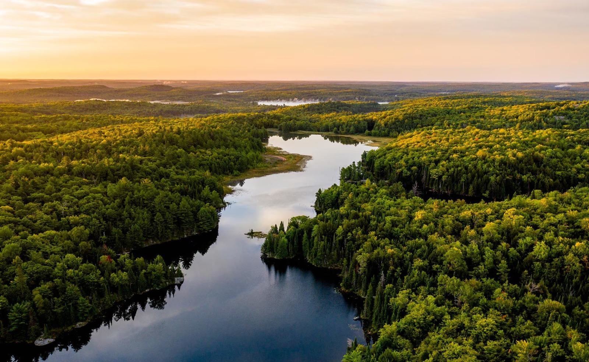
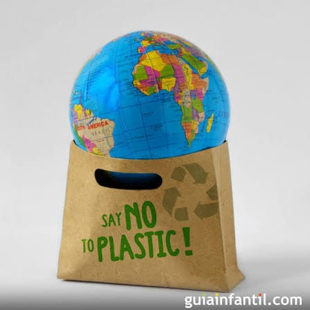

El medio ambiente es el sistema global compuesto por elementos naturales,
artificiales y socioculturales (como el agua, el aire, el suelo, la flora,
la fauna y las construcciones humanas) que interactúan entre sí y
están en constante modificación por la acción natural o humana.
Es el entorno que condiciona la forma de vida de la sociedad y
de todos los organismos del planeta.
El medio ambiente es fundamental porque nos provee de todo lo
necesario para nuestra subsistencia y bienestar:
Recursos vitales: Nos suministra agua potable, aire limpio para
respirar y suelos fértiles para cultivar alimentos.
Materia prima: Ofrece recursos como madera, minerales y fibras
para la construcción, energía y fabricación de productos.
Regulación del planeta: Los ecosistemas (como los bosques y los océanos)
regulan el clima global, absorben gases de efecto invernadero y purifican el agua.
Bienestar y salud: Proporciona espacios de recreación, equilibrio mental,
físico y los principios activos para una gran parte de los medicamentos.

Dado que el medio ambiente es el soporte físico y biológico de la vida,
su destrucción total haría imposible la existencia humana y
de la mayoría de los seres vivos. Sin él:
Colapso de recursos: Desaparecerían las fuentes de agua dulce y los alimentos,
provocando crisis alimentarias globales e irreversibles.
Clima inhabitable: La atmósfera se saturaría de contaminantes
sin reguladores naturales, desatando temperaturas extremas, fenómenos
meteorológicos descontrolados y la destrucción de la capa de ozono.
Extinción masiva: La pérdida total de los hábitats llevaría a la desaparición de
la biodiversidad, colapsando los ciclos biogeoquímicos que sostienen la vida en la Tierra.
La reutilización es la práctica de alargar la vida útil de los objetos
dándoles un nuevo uso antes de desecharlos, evitando generar nuevos residuos.
Algunas formas prácticas de aplicarla son:
Reutilizar envases: Usar frascos de vidrio, latas o botellas de plástico
resistentes como recipientes de almacenamiento, organizadores de escritorio o macetas.
Dar segunda vida a la ropa y textiles: Modificar, reparar o customizar
prendas que ya no usas, o bien donarlas y venderlas de segunda mano para que otros las aprovechen.
Renovar muebles y objetos: Restaurar muebles antiguos en lugar de comprar nuevos,
o fabricar estanterías y mesas auxiliares utilizando cajas de madera o tarimas (palets).
Optar por alternativas reutilizables: Sustituir los productos desechables de un
solo uso (bolsas de plástico, vasos, cubiertos o botellas de plástico) por
bolsas de tela, botellas de acero inoxidable y recipientes rellenables.

|
¿Qué tanto sabes? |